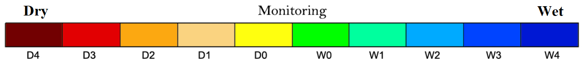

Food-Drought Nexus
Migrations of Major Cereals
| Barley |
Maize |
| Millet |
Rice |
| Wheat |
Country Area |
|
No data |
Drought Map |
Population (1000s)

Click on a country to display trade lines, or filter the criteria through the menus, below.
Are there any trade trends following the progression of underlying Annual Drought maps?